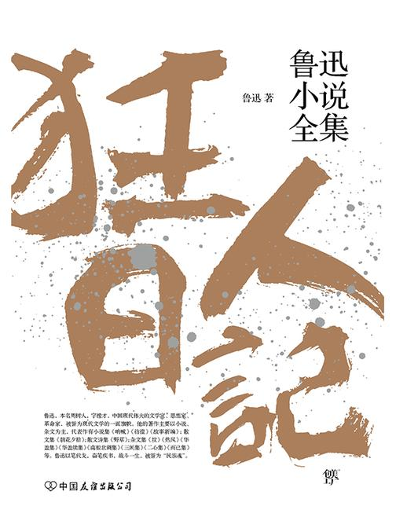
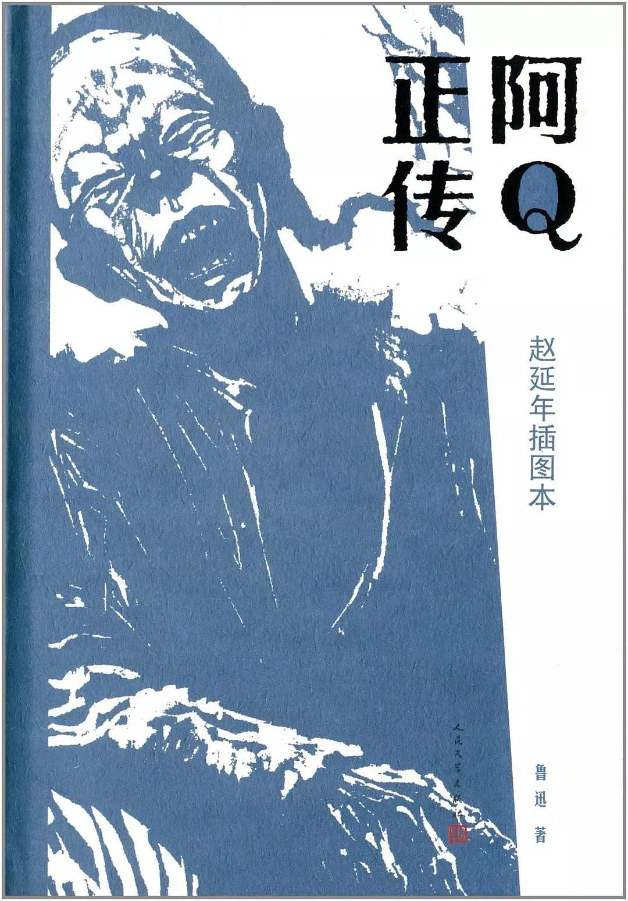
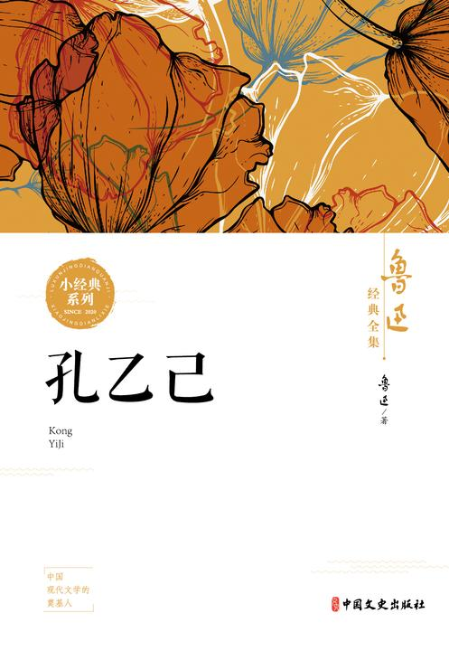
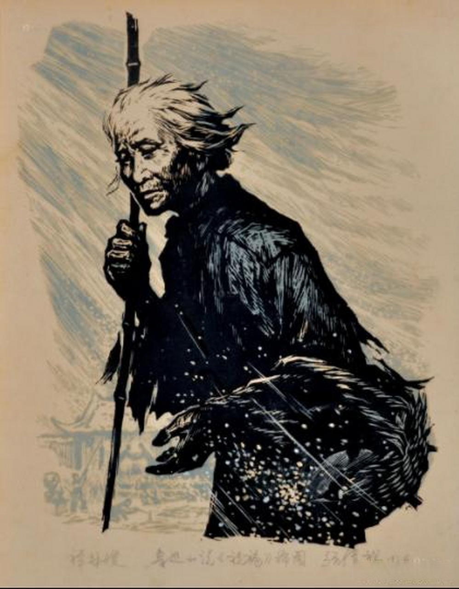

| 《狂人日记》 | 《阿Q正传》 | 《孔乙己》 | 《祝福》 |
|  |  |  |  |
|
《狂人日记》是由鲁迅先生所创作的中国历史上 第一部白话文小说，小说以狂人的自述这一极具 创新性的视角入手，通过对狂人思想的描述和外 界环境的描写，隐喻了封建礼教的“吃人”本质， 表现了作者对以封建礼教为主体内涵的中国封建 文化的反抗；也表现了作者深刻的忏悔意识。作 者以彻底的“革命民主主义”的立场对中国的文化 进行了深刻的反思，同时对中国的甚至是人类的 前途表达了深广的忧愤。而文章结尾处的“救救孩 子”则传达了鲁迅先生寄希望与未来，在黑暗的社 会中寻求光明道路的决心。《狂人日记》的出现 ，标志着中国白话文学的成熟，白话文学从此真 正登上了中国文学的舞台。 |
《阿Q正传》可以说是鲁迅先生最具影响力的作品之一 这篇中篇小说创作于1921年，在短短九章的内容中， 鲁迅先生活灵活现地刻画了一个旧时代底层劳动者的 典型形象，阿Q虽然愿意出力气养活自己，但却在旧时 代的黑暗环境中逐渐走向末路，最终一无所有，连名 姓都不被人记得。这部小说揭示了该小说深刻地表现 了封建文化窒息下形成的中国国民自轻自贱、守旧排 外、逆来顺受、自尊自大等劣根性，通过阿Q的“精神 胜利法”，把落后农民麻木愚昧、自欺欺人的精神状 态 刻画得入木三分。虽然阿Q本人早已不在人间，但 阿Q精神仍然存在于当今社会，鲁迅的《阿Q正传》在 今天仍具有极高的价值。
|
《孔乙己》是鲁迅先生的第二部白话文小说，同样有 极强的影响力和讽刺性，小说的主人公孔乙己是一个 好面子的读书人，总不愿脱下他那件象征读书人身份 的破长衫，说话满口“之乎者也”，时刻强调自己是读 书人，封建的教育让他好吃懒做，鄙视劳动他在封建 腐朽思想和科举制度毒害下，精神上迂腐不堪、麻木 不仁，生活上四体不勤、穷困潦倒，在人们的嘲笑戏 谑中混度时日，最后被封建地主阶级所吞噬。篇幅不 长，但是深刻揭露了当时科举制度对知识分子精神的 毒害和封建制度“吃人”的本质，具有强烈的反封建意 义。 |
作品叙写一个离开故乡的知识分子“我”在旧 历 年底回到故乡后寄寓在本家四叔（鲁四老 爷）家里准备过“祝福”时，见证了四叔家先 前的女仆祥林嫂瘁死的悲剧。 祥林嫂是旧中国劳动妇女的典型形象，她勤 劳善良，朴实顽强，但在封建礼教和封建思 想占统治地位的旧社会，她被践踏、被迫害 、被摧残，以至被旧社会所吞噬。封建礼教 对她的种种迫害，她曾不断地挣扎与反抗， 但并不是为了自由而反抗，而是为了顺从封 建礼教而反抗，祥林嫂从始至终都选择了对 封建礼教的屈服，最后还是被社会压垮了。 祥林嫂的悲剧深刻揭示了旧社会封建礼教对 劳动妇女的摧残和迫害，控诉了封建礼教吃 人的本质。 |